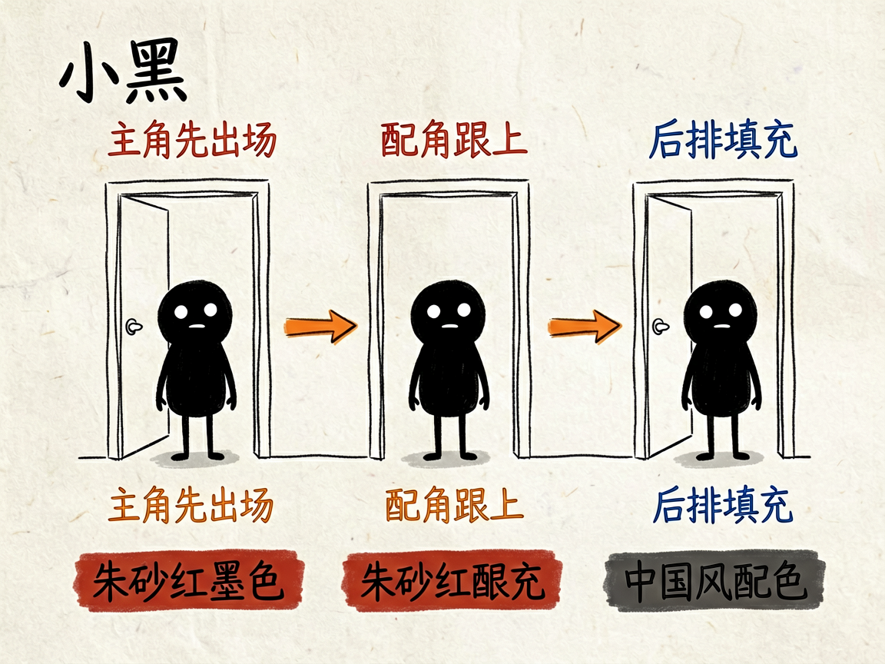

想做有层次感的剪纸动画，又不会画画？它帮你把故事拆成会动的四层 —— paper-cutout-remotion 介绍
你想做个讲历史、讲品牌故事的小动画，但平面的图太单薄，真去做 3D 又太难。有没有一种办法，让画面有前后纵深、像纸片一层层叠起来那种味道，还不用你亲手画？
paper-cutout-remotion 就是来解决这件事的。
你给它一份分镜脚本，它还你一段纸片分层风格的动画视频，背景、主角、配角、前景各动各的，靠前后遮挡做出立体感。

它到底能做什么
- 把每个镜头拆成四层：背景、后排、主角、前景，每层是独立的 PNG 图片（带透明背景的图），分别运动、互不干扰。
- 图片由 AI 生成（apiz 绘图接口），角色用绿幕方式生成方便抠成透明图，再分层摆放。
- 主角先出场、配角跟上、后排填充，错峰出现，画面有节奏不乱。
- 配上 AI 配音（MiniMax 或免费的微软 edge 配音）和字幕，宣纸米白的底色调，朱砂红、墨黑这类中国风配色。
- 适合历史叙事、知识科普、商业故事、人物关系这类"能分出主次"的内容。

一个具体例子
先生成无人物的背景底板，再生成角色素材并抠图：
python scripts/gen_plates.py "唐代长安宫殿全景，水墨远山，宣纸纹理" public/assets/plates/01-bg.png
python scripts/gen_characters.py assets_spec.yaml public/assets/source/
随后在场景文件里摆好每层的位置和出场顺序，最后生成配音、渲染成片。
谁适合用
- 做历史、文化、品牌故事类视频的作者。
- 知识科普、商业案例讲解，需要画面有主次和纵深。
- 喜欢剪纸/拼贴质感，但不想自己一张张画图的人。
一点说明 / 小提示
它是跑在 AI 助手里的技能，产出一套 Remotion 视频工程，不是开箱即用的 App。核心是"分层"思维：先定镜头、再画图，否则人物比例和主次容易返工。具体能力以项目文档为准。